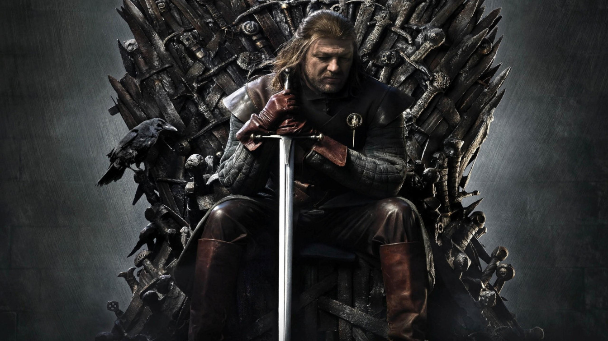
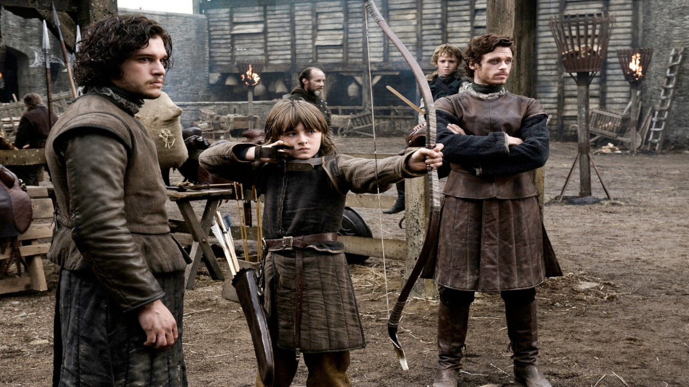
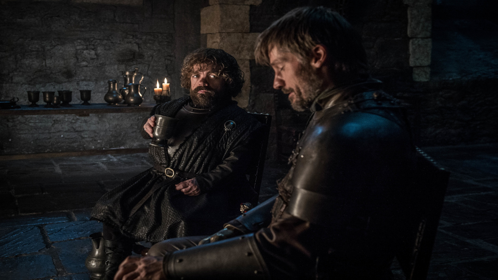
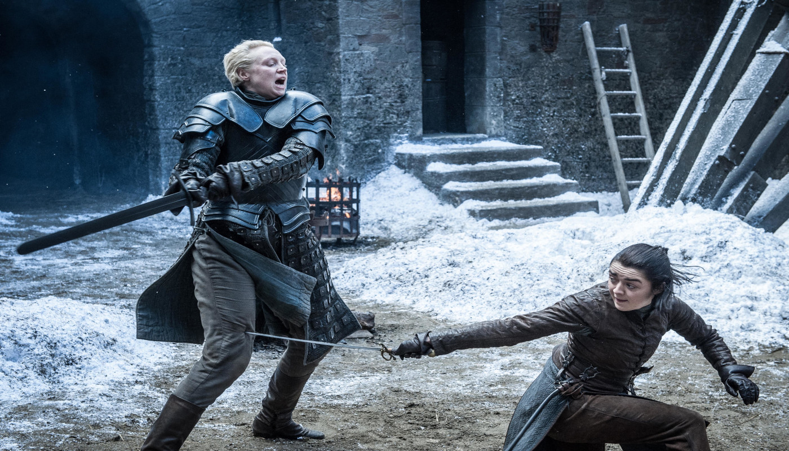
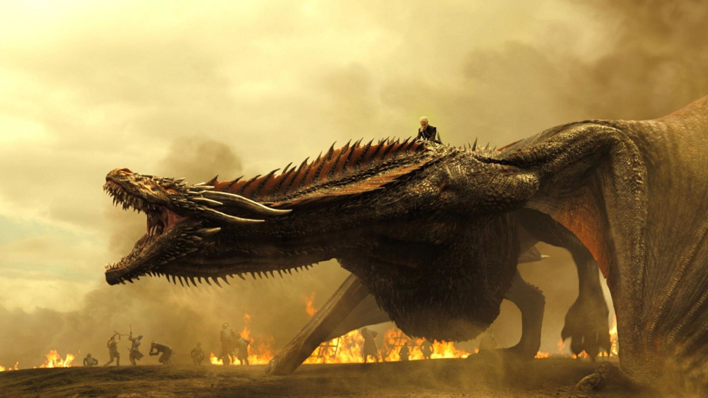
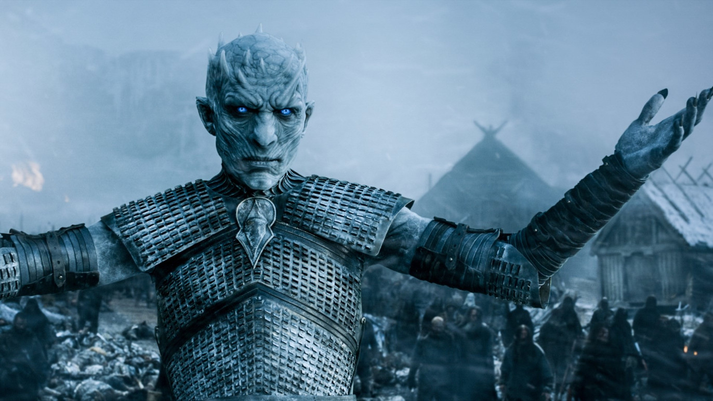

Game of Thrones é uma série de televisão norte-americana criada por David Benioff e D. B. Weiss, baseada na série de livros A Song of Ice and Fire de George R. R. Martin.Situada nos continentes fictícios de Westeros e Essos, a série centra-se no Trono de Ferro dos Sete Reinos e segue um enredo de alianças e conflitos entre as famílias nobres dinásticas, seja competindo para reivindicar o trono ou lutando por sua independência.